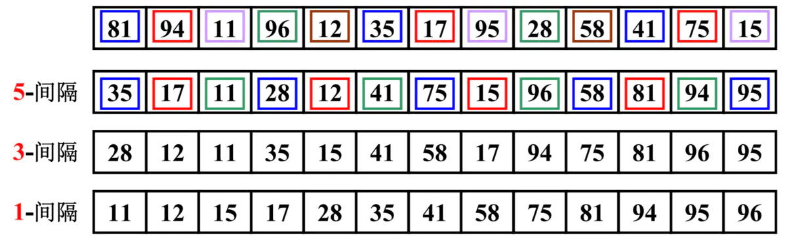
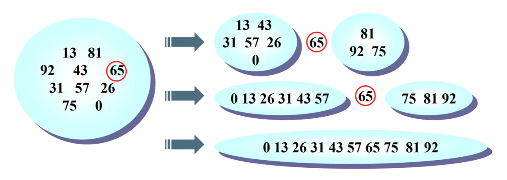

希尔排序
希尔排序是插入排序的一种高效的改进版, 并且效率比插入排序要更快.
插入排序的问题
- 假设一个很小的数据项在很靠近右端的位置上, 这里本来应该是较大的数据项的位置.
- 把这个小数据项移动到左边的正确位置, 所有的中间数据项都必须向右移动一位
- 如果每个步骤对数据项都进行N次复制, 平均下来是移动N/2, N个元素就是 N*N/2 = N²/2.
- 所以我们通常认为插入排序的效率是O(N²)
- 如果有某种方式, 不需要一个个移动所有中间的数据项, 就能把较小的数据项移动到左边, 那么这个算法的执行效率就会有很大的改进.
希尔排序的做法
- 比如下面的数字, 81, 94, 11, 96, 12, 35, 17, 95, 28, 58, 41, 75, 15.
- 我们先让间隔为5, 进行排序. (35, 81), (94, 17), (11, 95), (96, 28), (12, 58), (35, 41), (17, 75), (95, 15)
- 排序后的新序列, 一定可以让数字离自己的正确位置更近一步.

- 选择合适的增量
- 在希尔排序的原稿中, 他建议的初始间距是N / 2, 简单的把每趟排序分成两半
- 也就是说, 对于N = 100的数组, 增量间隔序列为: 50, 25, 12, 6, 3, 1
希尔排序的实现
1 | // 希尔排序 |
希尔排序的效率
- 希尔排序的效率很增量是有关系的
- 它的效率证明非常困难, 甚至某些增量的效率到目前依然没有被证明出来
- 经过统计, 希尔排序使用原始增量, 最坏的情况下时间复杂度为O(N²), 通常情况下都要好于O(N²)
快速排序
快速排序几乎可以说是目前所有排序算法中, 最快的一种排序算法.
快速排序的思想
- 快速排序是什么
- 希尔排序相当于插入排序的升级版, 快速排序其实是我们学习过的最慢的冒泡排序的升级版
- 冒泡排序需要经过很多次交换, 才能在一次循环中, 将最大值放在正确的位置
- 快速排序可以在一次循环中(其实是递归调用)找出某个元素的正确位置, 并且该元素之后不需要任何移动.
- 快速排序的思想
- 快速排序最重要的思想是分而治之
- 假设我们有一组数字需要排序(13 81 92 43 65 31 57 26 75 0):
- 第一步: 从其中选出了65. (其实可以是选出任意的数字, 我们以65举个栗子)
- 第二步: 我们通过算法: 将所有小于65的数字放在65的左边, 将所有大于65的数字放在65的右边.
- 第三步: 递归的处理左边的数据.(比如你选择31来处理左侧), 递归的处理右边的数据.(比如选择75来处理右侧)

快速排序的枢纽
如何选则合适枢纽
- 一种方案是直接选择第一个元素作为枢纽
- 但第一个作为枢纽在某些情况下, 效率并不是特别高.
- 另一种方案是使用随机数
- 随机取 pivot？但是随即函数本身就是一个耗性能的操作.
- 另一种比较优秀的解决方案: 取头、中、尾的中位数
- 例如 8、12、3的中位数就是8
1 | // 选择枢纽 |
- 我们封装了一个函数, 该函数用于选择出来合适的枢纽.
- 该函数要求传入left和right, 这样可以根据left和right求出一个center, 在选择它们三者的中位数.
- 代码序号1: 根据left/right求出center.
- 代码序号2: 将left放在最前面, 将center放在中间, 将right放在右边.
- 代码序号3: 这里有一个巧妙的操作, 我们将pivot值放在了right的紧挨着的左边, 为什么这样操作呢?
- 这样操作的目的是在之后交换的时候, pivot的值不需要移动来移动去.
- 可以在最后选定位置后, 直接再交换到正确的位置即可(也是最终的位置).
- 代码序号4: 返回选择出来的枢纽
代码实现
1 | // 快速排序实现 |
- 这里有两个函数: quickSort和quickSortRec.
- 外部调用时, 会调用quickSort
- 内部递归时, 会调用quickSortRec
- 我们这里主要讲解一下quickSortRec方法.
- 代码序号0: 是递归的结束条件. 可以回头再来看这个函数.
- 代码序号1: 从三个数中获取枢纽值, 这个方法我们在上一节中已经讲过, 这里不再累述.
- 代码序号2: 我们的重点代码
- 代码序号2.1: 循环交换合适位置的数值.
- 代码序号2.2: 使用两个while循环, 递归的查找合适的i(大于枢纽的值)和合适的j(小于枢纽的值).
- 代码序号2.3: 交换i和j位置的值.
- 代码序号2.4: 当i<j的时候, 两边查找到了同一个位置, 这个时候停止循环.
- 代码序号3: 刚才我们查找到的i位置正是pivot应该所在的位置, 和pivot替换即可.
- 为什么将i位置可以换到最后呢? 万一它比pivot小呢?
- 这是因为我们在while (this.array[++i] < pivot)先使用的是i, 而不是j. 但是这意味着什么呢?
- 意味着i找到的一个值, 现在停下来的, 必然是大于pivot. 而j会超过i的位置向后找了一个小于pivot.
- 但是, 这个时候已经不需要继续进行交换了, 直接退出即可.
- 而退出后, i位置的数值是大于pivot, 所以可以将其换到后面.
- 代码序号4: 递归调用该函数, 将left, i - 1传入就是左边排序, 将i + 1, right就是右边排序
快速排序的效率
- 快速排序的平均效率:
- 快速排序的平均效率是O(N * logN).
- 虽然其他某些算法的效率也可以达到O(N * logN), 但是快速排序是最好的.